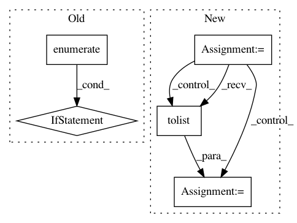

9d22742baeeb608bac5594c3ece96f62f0734dce,qanta/buzzer/trainer.py,Trainer,test,#Trainer#Any#,62
Before Change
qnum = qnum.tolist()
finals[qnum] = np.argmax(ys[i][-1][:N_GUESSERS]).tolist()
buzzes[qnum] = [-1, -1]
for pos, chosen in enumerate(action):
if chosen < N_GUESSERS:
buzzes[qnum] = (pos, chosen)
break
progress_bar(*test_iter.epoch_detail)
test_iter.finalize(reset=True)
progress_bar.finalize()
return buzzes, finals
After Change
ys = F.softmax(ys) // length * batch_size, n_guessers
ys = F.swapaxes(F.reshape(ys, (length, batch_size, -1)), 0, 1)
ys.to_cpu()
masks = batch.mask.T.tolist()
assert len(masks) == batch_size
for qnum, scores, mask in zip(batch.qids, ys.data, masks):
if isinstance(qnum, np.ndarray):
qnum = qnum.tolist()
total = int(sum(mask))
buzzes[qnum] = scores[:total].tolist()
progress_bar(*test_iter.epoch_detail)
test_iter.finalize(reset=True)
progress_bar.finalize()
return buzzes
In pattern: SUPERPATTERN
Frequency: 3
Non-data size: 5
Instances
Project Name: Pinafore/qb
Commit Name: 9d22742baeeb608bac5594c3ece96f62f0734dce
Time: 2017-05-13
Author: sjtufs@gmail.com
File Name: qanta/buzzer/trainer.py
Class Name: Trainer
Method Name: test
Project Name: EducationalTestingService/skll
Commit Name: ca10c185d94470054d693f19e7691523dbe3ec55
Time: 2019-03-05
Author: jbiggs@ets.org
File Name: skll/data/readers.py
Class Name: NDJReader
Method Name: _sub_read
Project Name: wandb/client
Commit Name: 19b46a6467c190c44474565238b5c130e43255b8
Time: 2021-02-03
Author: tim.s.sweeney@gmail.com
File Name: wandb/sdk_py27/interface/_dtypes.py
Class Name: ListType
Method Name: from_obj